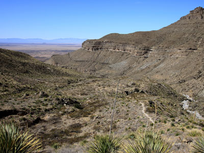
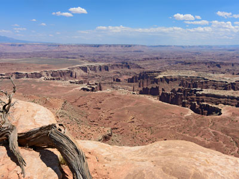
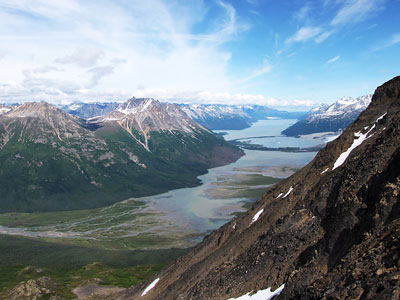
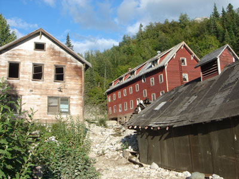
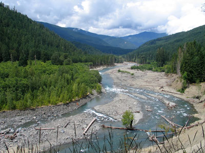

National Parks Travel Guide
Federally protected natural areas preserving diverse landscapes, ecosystems, wildlife, and geologic features for conservation, recreation, and public enjoyment.
Top Locations


-400.jpg)


PortableNYCTours, CC BY-SA 4.0, via Wikimedia Commons; Image Size Adjusted
Acadia National Park
Maine
Located along the mid-section of the Maine coast, the park preserves the natural beauty of the rocky headlands, including the highest mountains along the Atlantic coast

Jdforrester, CC BY 4.0, via Wikimedia Commons; Image Size Adjusted
Biscayne National Park
Florida
National Park preserves Biscayne Bay and its offshore barrier reefs, including the northernmost region of the Florida Reef, one of the largest coral reefs in the world

Jean-Christophe BENOIST, CC BY 3.0, via Wikimedia Commons; Image Size Adjusted
Dry Tortugas National Park
Florida
National park about 68 miles west of Key West in the Gulf of Mexico, preserving Fort Jefferson and the Dry Tortugas islands, the westernmost and most isolated of the Florida Keys

Jean-Christophe BENOIST, CC BY 3.0, via Wikimedia Commons; Image Size Adjusted
Everglades National Park
Florida
National park protecting the southern twenty percent of the original Everglades, the largest tropical wilderness in the U.S. and largest wilderness east of the Mississippi

.jpg){kind=link}


.jpg){kind=link}
Congaree National Park
South Carolina
Park preserves the largest tract of old growth bottomland hardwood forest in the United States, with some of the tallest trees and highest forest canopy in the eastern U.S.

Anthony Quintano from Hillsborough, NJ, United States, CC BY 2.0, via Wikimedia Commons; Image Size Adjusted
.jpg){kind=link}
Shenandoah National Park
Virginia
National park encompassing part of Virginia's Blue Ridge Mountains, with the Shenandoah River valley to the west and the rolling Piedmont hills to the east

Jean-Christophe BENOIST, CC BY 3.0, via Wikimedia Commons; Image Size Adjusted
New River Gorge National Park and Preserve
West Virginia
The newest National Park designed to protect and maintain the New River Gorge in southern West Virginia in the Appalachian Mountains

Hot Springs National Park
Arkansas
National park preserving hot springs flowing from Hot Springs Mountain, with hiking trails, camping areas, and North America's grandest collection of bathhouses

MusikAnimal, CC BY-SA 4.0, via Wikimedia Commons; Image Size Adjusted

Mammoth Cave National Park
Kentucky
World's longest known cave system with more than 400 miles (640 km) of surveyed passageways

Rhododendrites, CC BY-SA 4.0, via Wikimedia Commons; Image Size Adjusted
.jpg){kind=link}
Great Smoky Mountains National Park
Tennessee
Park straddling the ridgeline of the Great Smoky Mountains, part of the Blue Ridge and Appalachian chain, home to some of the highest peaks in eastern North America

PortableNYCTours, CC BY-SA 4.0, via Wikimedia Commons; Image Size Adjusted
.jpg){kind=link}
Big Bend National Park
Texas
Largest protected area of Chihuahuan Desert topography and ecology in the United States, and was named after a large bend in the Rio Grande/Río Bravo

Sam valadi, CC BY 2.0, via Wikimedia Commons; Image Size Adjusted

Guadalupe Mountains National Park
Texas
National park in the Guadalupe Mountains east of El Paso, home to Guadalupe Peak, the highest point in Texas, and the landmark El Capitan

Armando Olivo Martín del Campo, CC BY-SA 4.0, via Wikimedia Commons; Image Size Adjusted

Grand Canyon National Park
Arizona
Park's central feature is the Grand Canyon, a gorge of the Colorado River, which is often considered one of the Wonders of the World

Tdorante10, CC BY-SA 4.0, via Wikimedia Commons; Image Size Adjusted
_22_-_Staten_Island_Ferry.jpg){kind=link}
Petrified Forest National Park
Arizona
Named for its large deposits of petrified wood, the park spans 346 square miles of semi-desert shrub steppe and highly eroded, colorful badlands

Saguaro National Park
Arizona
National park protecting two areas, the Tucson and Rincon Mountain Districts, preserving Sonoran Desert landscapes and wildlife, including the giant saguaro cactus
-400.jpg)
MusikAnimal, CC BY-SA 4.0, via Wikimedia Commons; Image Size Adjusted
.jpg){kind=link}
Channel Islands National Park
California
Protected marine and island ecosystem featuring endemic wildlife, sea caves, hiking trails, and underwater reserves across five isolated islands.

Death Valley National Park
California
National park straddling the California-Nevada border, protecting the Mojave Desert's salt flats, sand dunes, badlands, valleys, canyons, and mountains
-400.jpg)
Joshua Tree National Park
California
Named for the Joshua trees native to the Mojave Desert, the park spans two deserts shaped by elevation: the higher Mojave Desert and the lower Colorado Desert

The All-Nite Images from NY, NY, USA, CC BY-SA 2.0, via Wikimedia Commons; Image Size Adjusted
.jpg){kind=link}
Kings Canyon National Park
California
Rugged, glacier-carved valley more than a mile deep, with 14,000-foot peaks, high mountain meadows, swift rivers, and some of the world's largest giant sequoia groves

King of Hearts, CC BY-SA 4.0, via Wikimedia Commons; Image Size Adjusted

Lassen Volcanic National Park
California
Park containing the world's largest plug dome volcano and the southernmost volcano in the Cascade Range, one of the few places all four volcano types occur amid active mud pots and hot springs

Pinnacles National Park
California
National park protecting eroded formations of an extinct volcano's western half, carried 200 miles by the San Andreas Fault into California's Pacific Coast Ranges

Redwood National and State Parks
California
Complex of state and national parks along the Northern California coast, protecting old-growth rainforest and 45 percent of all remaining coast redwoods, among Earth's tallest trees

Ajay Suresh from New York, NY, USA, CC BY 2.0, via Wikimedia Commons; Image Size Adjusted
.jpg){kind=link}
Sequoia National Park
California
Known for its giant sequoias, including the General Sherman tree, Earth's largest by volume, the Giant Forest, and Mount Whitney, the highest point in the contiguous U.S.

King of Hearts, CC BY-SA 4.0, via Wikimedia Commons; Image Size Adjusted
Yosemite National Park
California
Park in the western Sierra Nevada of Central California, renowned for granite cliffs, waterfalls, giant sequoia groves, meadows, glaciers, and biological diversity

PortableNYCTours, CC BY-SA 4.0, via Wikimedia Commons; Image Size Adjusted
Black Canyon of the Gunnison National Park
Colorado
National park contains the deepest most dramatic sections of the Black Canyon

Great Sand Dunes National Park
Colorado
Park conserves an area of large sand dunes up to 750 feet (230 m) tall in south-central Colorado

Mesa Verde National Park
Colorado
National park and UNESCO World Heritage Site protects some of the best-preserved Ancestral Puebloan archaeological sites in the United States

Rocky Mountain National Park
Colorado
One of the highest national parks in the nation, with the highest paved through-road in the country and sixty scenic peaks over 12,000 feet

Eden, Janine and Jim, CC BY 2.0, via Wikimedia Commons; Image Size Adjusted

Hawaiʻi Volcanoes National Park
Hawaii
Expansive natural area featuring active volcanoes, lava tubes, craters, and diverse native ecosystems shaped by ongoing geological activity.

Eden, Janine and Jim, CC BY 2.0, via Wikimedia Commons; Image Size Adjusted
Haleakalā National Park
Hawaii
Protected natural area encompassing a massive volcanic crater, subalpine shrublands, native rainforests, and endangered species habitats.

Jean-Christophe BENOIST, CC BY 3.0, via Wikimedia Commons; Image Size Adjusted

Great Basin National Park
Nevada
Named for the dry, mountainous region between the Sierra Nevada and Wasatch Mountains, notable for ancient bristlecone pines, Lehman Caves, and Wheeler Peak Glacier

Carlsbad Caverns National Park
New Mexico
Cavern known for The Big Room, a limestone chamber nearly 4,000 feet long and 255 feet high, the largest chamber in North America

White Sands National Park
New Mexico
National park covers 275 square miles (710 km2) of white sand dunes composed of gypsum crystals
Arches National Park
Utah
National park known for more than 2,000 natural sandstone arches, including Delicate Arch, and the highest density of natural arches in the world

Gh9449, CC BY-SA 4.0, via Wikimedia Commons; Image Size Adjusted

Bryce Canyon National Park
Utah
Collection of giant natural amphitheaters with spectacular red, orange, and white hoodoos, formed by frost weathering and stream erosion of sedimentary rock

Jim.henderson, Public domain, via Wikimedia Commons; Image Size Adjusted

Canyonlands National Park
Utah
Park preserves a colorful landscape eroded into numerous canyons, mesas, and buttes by the Colorado River, the Green River, and their respective tributaries

Momos, CC BY-SA 3.0, via Wikimedia Commons; Image Size Adjusted

Capitol Reef National Park
Utah
Named for its whitish Navajo Sandstone domes, the park features brilliantly colored sandstone cliffs and contrasting layers of stone and earth

Andy C, CC BY-SA 3.0, via Wikimedia Commons; Image Size Adjusted

Zion National Park
Utah
Known for Zion Canyon's deep walls of reddish and tan Navajo Sandstone, carved by the Virgin River, plus mountains, mesas, monoliths, and slot canyons

Eden, Janine and Jim, CC BY 2.0, via Wikimedia Commons; Image Size Adjusted
Gates of the Arctic National Park and Preserve
Alaska
Northernmost national park in the United States, situated entirely north of the Arctic Circle, the park is the second largest in the US
-400.jpg)
Eden, Janine and Jim, CC BY 2.0, via Wikimedia Commons; Image Size Adjusted
Kobuk Valley National Park
Alaska
National park in Arctic northwestern Alaska, north of the Arctic Circle, preserving the 100-foot Great Kobuk Sand Dunes and caribou migration routes

Eden, Janine and Jim, CC BY 2.0, via Wikimedia Commons; Image Size Adjusted
Katmai National Park and Preserve
Alaska
National park and preserve in southwest Alaska, notable for the Valley of Ten Thousand Smokes and for its brown bears

Eden, Janine and Jim, CC BY 2.0, via Wikimedia Commons; Image Size Adjusted
Lake Clark National Park and Preserve
Alaska
Park includes streams and lakes vital to the Bristol Bay salmon fishery, protecting rainforests along Cook Inlet, alpine tundra, glaciers, and two volcanoes

Eden, Janine and Jim, CC BY 2.0, via Wikimedia Commons; Image Size Adjusted
Denali National Park and Preserve
Alaska
Vast wilderness featuring North America's tallest peak, abundant wildlife, tundra ecosystems, and backcountry access centered on a single scenic road.

Eden, Janine and Jim, CC BY 2.0, via Wikimedia Commons; Image Size Adjusted
Kenai Fjords National Park
Alaska
Vast coastal wilderness of glaciers, fjords, and icefields where rugged mountains meet the ocean and abundant marine wildlife thrives.

Eden, Janine and Jim, CC BY 2.0, via Wikimedia Commons; Image Size Adjusted
Wrangell–St. Elias National Park and Preserve
Alaska
A vast protected wilderness encompassing massive glaciers, rugged mountain ranges, and remote valleys offering unparalleled opportunities for exploration and outdoor adventure.
-400.jpg)
Eden, Janine and Jim, CC BY 2.0, via Wikimedia Commons; Image Size Adjusted
Glacier Bay National Park and Preserve
Alaska
Vast wilderness of tidewater glaciers, rugged mountains, temperate rainforest, and deep fjords shaped by dynamic natural forces and abundant wildlife.

Joyofmuseums, CC BY-SA 4.0, via Wikimedia Commons; Image Size Adjusted

Glacier National Park
Montana
National park spanning over 1 million acres of the Rocky Mountains, with over 130 named lakes and habitat for over 1,000 plant and hundreds of animal species

Joyofmuseums, CC BY-SA 4.0, via Wikimedia Commons; Image Size Adjusted
Crater Lake National Park
Oregon
National park encompassing the caldera of Crater Lake, the deepest lake in the United States, the second-deepest in North America, and the surrounding hills and forests.

Joyofmuseums, CC BY-SA 4.0, via Wikimedia Commons; Image Size Adjusted
Mount Rainier National Park
Washington
National park preserving all of Mount Rainier, a 14,411-foot (4,392 m) stratovolcano, surrounded by valleys, waterfalls, subalpine meadows, and old-growth forest

Joyofmuseums, CC BY-SA 4.0, via Wikimedia Commons; Image Size Adjusted
North Cascades National Park
Washington
Rugged peaks of the North Cascades Range hold the most expansive glacial system in the contiguous U.S. and forests with the highest flora biodiversity of any American national park

Joyofmuseums, CC BY-SA 4.0, via Wikimedia Commons; Image Size Adjusted
Olympic National Park
Washington
National park highlightng four regions: the Pacific coastline, alpine areas, the west-side temperate rainforest, and the forests of the drier east side and three distinct ecosystems

Postdlf, CC BY-SA 3.0, via Wikimedia Commons; Image Size Adjusted

Grand Teton National Park
Wyoming
National park just south of Yellowstone, spanning the major peaks of the 40-mile Teton Range and much of the valley known as Jackson Hole

Joyofmuseums, CC BY-SA 4.0, via Wikimedia Commons; Image Size Adjusted
Yellowstone National Park
Wyoming
The first national park in the U.S., and widely considered the first in the world, known for its wildlife and geothermal features, especially Old Faithful geyser

Hypnotoad78, CC BY-SA 4.0, via Wikimedia Commons; Image Size Adjusted

Gateway Arch National Park
Missouri
National park centered on the Gateway Arch, St. Louis' defining icon, with a 91-acre park, the Old Courthouse of the Dred Scott case, and a 140,000-square-foot museum

Ingfbruno, CC BY-SA 3.0, via Wikimedia Commons; Image Size Adjusted
.jpg){kind=link}
Theodore Roosevelt National Park
North Dakota
National park honoring U.S. President Theodore Roosevelt comprises three geographically separated areas of badlands in western North Dakota

Badlands National Park
South Dakota
242,756 acres of sharply eroded buttes and pinnacles, along with the largest undisturbed mixed grass prairie in the United States

ajay_suresh, CC BY 2.0, via Wikimedia Commons; Image Size Adjusted
_(51395759113).jpg){kind=link}
Wind Cave National Park
South Dakota
One of the world's longest caves, with over 149 miles of explored passageways, above one of the largest remaining natural mixed-grass prairies in the U.S.

ajay_suresh, CC BY 2.0, via Wikimedia Commons; Image Size Adjusted
.jpg){kind=link}
Indiana Dunes National Park
Indiana
National park located in northwestern Indiana runs for about 20 miles (32 km) along the southern shore of Lake Michigan and covers 15,349 acres (6,212 ha) of various acreage

Misterweiss at English Wikipedia, Public domain, via Wikimedia Commons; Image Size Adjusted

Isle Royale National Park
Michigan
National park consisting of Isle Royale, the fourth-largest lake island in the world, and more than 400 small adjacent islands, as well as the surrounding waters of Lake Superior

Hypnotoad78, CC BY-SA 4.0, via Wikimedia Commons; Image Size Adjusted
Voyageurs National Park
Minnesota
National park commemorating the voyageurs, French-Canadian fur traders who first traveled the area, known for its waterways and popularity with canoeists, kayakers, and anglers

Ajay Suresh from New York, NY, USA, CC BY 2.0, via Wikimedia Commons; Image Size Adjusted
.jpg){kind=link}
Cuyahoga Valley National Park
Ohio
National park of forests, rolling hills, ravines, wetlands, and about 100 waterfalls, led by the 65-foot Brandywine Falls, the tallest in Northeast Ohio

Eden, Janine and Jim, CC BY 2.0, via Wikimedia Commons; Image Size Adjusted
National Park of American Samoa
American Samoa
remote protected landscape of volcanic islands featuring tropical rainforests, coral reefs, and traditional Polynesian villages shaped by centuries of cultural heritage.
Eden, Janine and Jim, CC BY 2.0, via Wikimedia Commons; Image Size Adjusted
Virgin Islands National Park
U.S. Virgin Islands
Protected coastal and island ecosystem featuring tropical forests, coral reefs, historic ruins, and miles of hiking trails and beaches.
Overview
The United States National Parks form a sweeping network of protected lands that showcase some of the most breathtaking natural wonders on Earth. From towering granite cliffs and ancient forests to vast deserts and geothermal marvels, these preserved landscapes invite travelers into environments shaped over millions of years. Visitors can walk beneath the giant sequoias, gaze into colorful canyon depths, or witness geysers erupting with raw power, each park offering a vivid encounter with nature’s artistry and scale. Wildlife thrives across these regions, where herds, predators, and birdlife coexist in ecosystems largely untouched by modern development.
Established to safeguard natural beauty and cultural heritage, the park system also tells stories of Indigenous history, exploration, and conservation. Scenic drives, hiking trails, and ranger-led programs allow travelers to experience both adventure and education, while carefully managed facilities ensure access without diminishing the landscapes themselves. Whether seeking solitude beneath a starlit sky or the thrill of rugged terrain, visitors find that these protected areas deliver immersive journeys that highlight the enduring relationship between people and the natural world.
This article uses material from the Wikipedia articles and official tourism pages for the National Park Service, which are released under the Creative Commons Attribution-Share-Alike License 3.0.